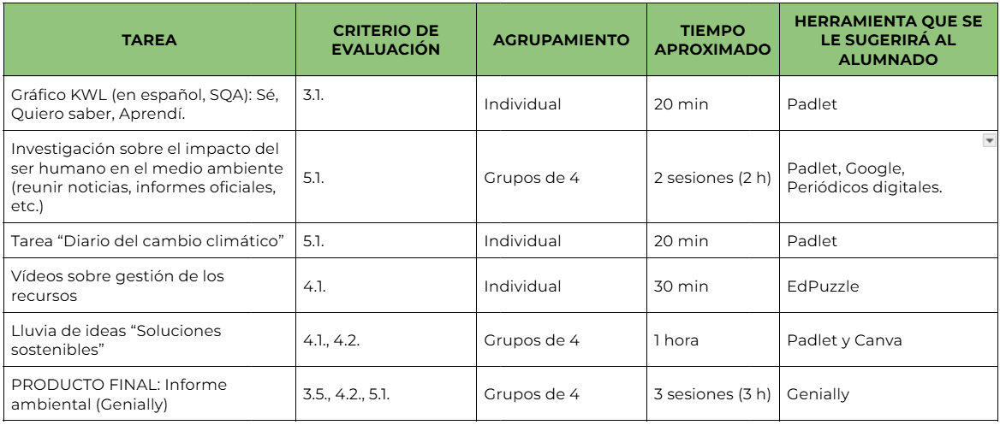

Criterios de evaluación
Cada tarea de este proyecto está asociada a unos criterios de evaluación para que se pueda llevar a cabo una evaluación completa y exhaustiva de todo el proceso:

Criterios de evaluación:
3.1. Plantear preguntas e hipótesis que puedan ser respondidas o contrastadas utilizando métodos científicos, en la explicación de fenómenos biológicos y geológicos y la realización de predicciones sobre estos.
3.5. Cooperar y colaborar en las distintas fases de un proyecto científico para trabajar con mayor eficiencia, valorando la importancia de la cooperación en la investigación, respetando la diversidad y la igualdad de género, y favoreciendo la inclusión.
4.1. Resolver problemas o dar explicación a procesos biológicos o geológicos utilizando conocimientos, datos e información proporcionados por el docente, el razonamiento lógico, el pensamiento computacional o recursos digitales.
4.2. Analizar críticamente la solución a un problema sobre fenómenos biológicos y geológicos, cambiando los procedimientos utilizados o las conclusiones si dicha solución no fuese viable o ante nuevos datos aportados con posterioridad.
5.1. Identificar los posibles riesgos naturales potenciados por determinadas acciones humanas sobre una zona geográfica, teniendo en cuenta sus características litológicas, relieve, vegetación y factores socioeconómicos, así como reconocer los principales riesgos naturales en Andalucía.